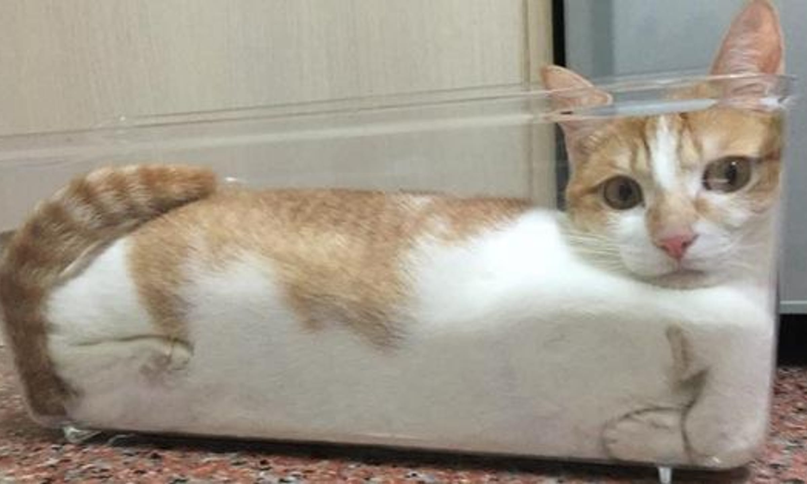
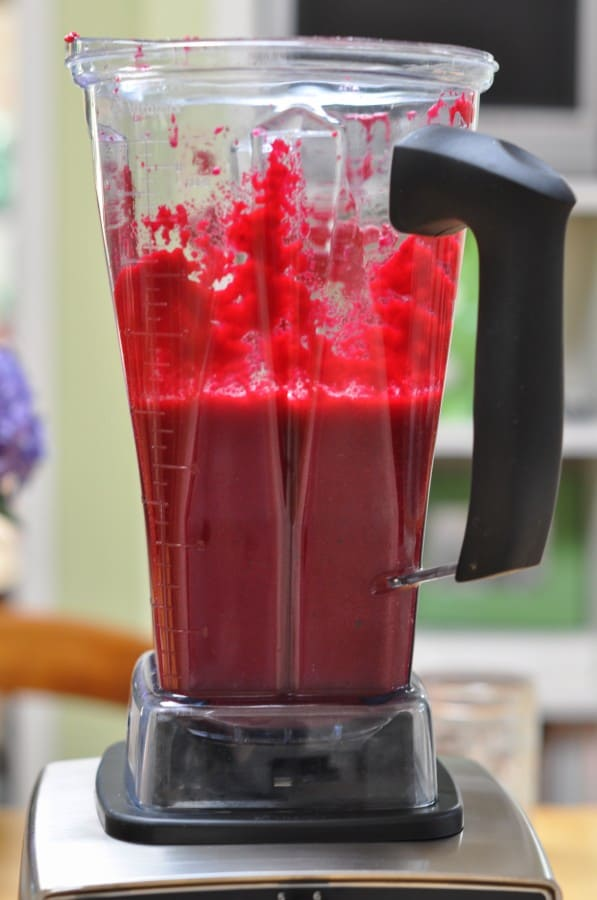

Cat bread

Ingredients:
- 1 Fluffy Cat: Preferably a loaf-shaped breed like a Maine Coon or Persian but any cat will do! Remember, the fluffier the cat, the fluffier the bread!
- 1 Cup of Warm Milk: Because even cats need a warm hug sometimes.
- 1/2 Cup of Sugar: For sweetness that'll make your taste buds purr.
- 2 1/4 Teaspoons of Active Dry Yeast: The secret ingredient that'll make your cat bread rise to the occasion.
- 1/4 Cup of Melted Butter: For richness that'll make your cat bread sing like a chorus of meows.
- 1 Large Egg: For binding and richness, because every cat bread deserves the best.
- 1 Teaspoon of Salt: A pinch of magic to balance the sweetness.
- 3 1/2 Cups of All-Purpose Flour: The foundation of your purrfect cat bread.
- 1/4 Cup of Water: For a smooth and kneadable dough.

Instructions:
- Trick the Cat: This is the most important step! Lure your feline friend into a cozy box with a tempting treat. Once they're snuggled up, quickly and whisk them away to the blender.
- Blend the Cat.

- Knead the Dough: In a large bowl, combine the blended cat mixture with the egg, salt, and flour. Knead the dough for 5-7 minutes until it's smooth and elastic. This is your chance to channel your inner cat and get your paws dirty!
.jpeg)
- Pour the Blended Cat on the Dough: Gently pour the blended cat mixture over the dough. Let it sit for 10 minutes, allowing the yeast to work its magic and make the dough rise like a fluffy cat cloud.
- Place the dough on a baking sheet and bake at 375°F (190°C) for 25-30 minutes, or until golden brown.
Enjoy! Let the cat bread cool slightly before slicing and serving. Enjoy the purrfectly adorable creation that is your very own cat bread!
Go to Recipe list